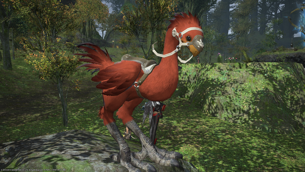

ADOPT NOW!The crimson chocobo is a rare and majestic creature from the fantastical world of Eorzea, now available for adoption in a special, imaginative experience. Known for their striking red plumage and gentle demeanor, crimson chocobos are beloved companions to adventurers and fantasy enthusiasts alike. Adopting a crimson chocobo is an opportunity to bring a piece of this enchanting world into your own home.